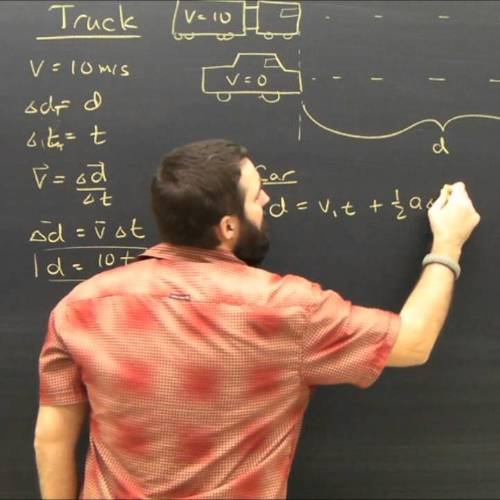
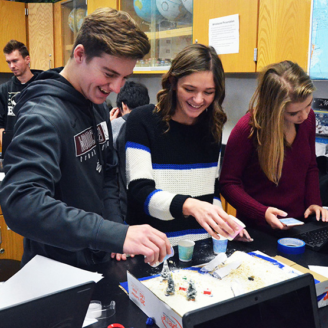

The science curriculum is based on the use of the methods of inquiry to participate in investigations and problem solving related to the standards delineated in The Massachusetts Science Frameworks. The process of seeking solutions is emphasized rather than the solutions themselves, making the laboratory, as well as other student activities, key to all courses. The structural content of the Science curriculum revolves around the core of Physics, Chemistry and Biology as well as a fundamental understanding of the natural sciences. Science is also viewed as a human endeavor that relates people to the real world. At the same time, the Science curriculum embraces technology, including extensive use of classroom computers that are used throughout the curriculum.
 